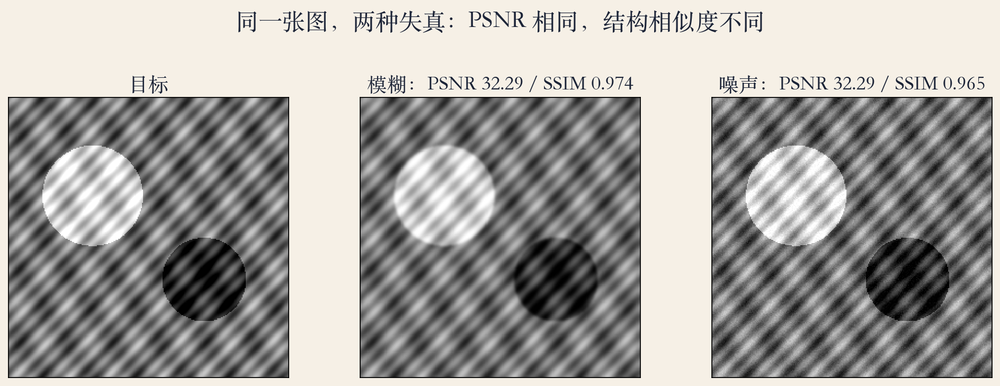
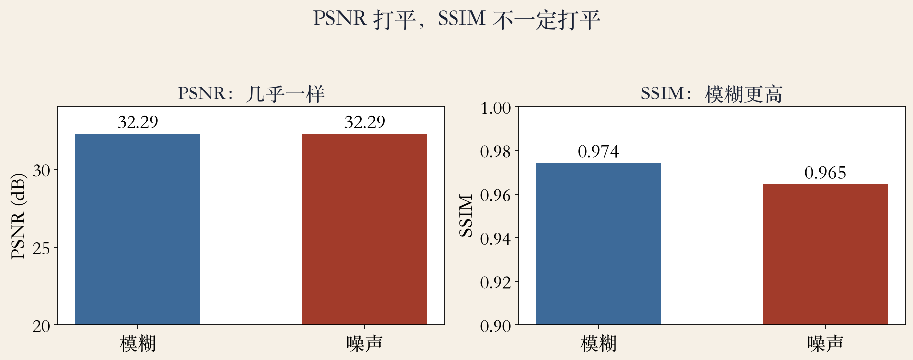
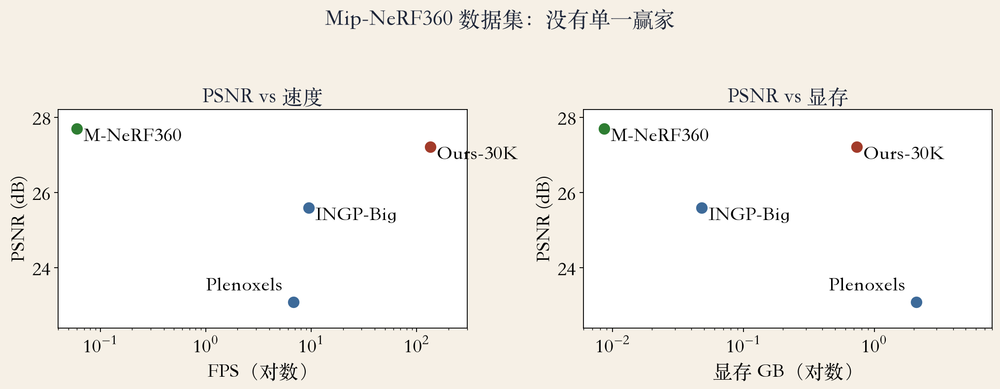

评测 · 同一张表
同一张表，谁赢了
同一张基准表，三个指标给出两个赢家。
Mip-NeRF360 上 PSNR 27.69 对 27.21。
SSIM 0.815 对 0.792，LPIPS 0.214 对 0.237。
本集问：指标怎么算，表怎么读。
依据：论文第 8 页
三个指标
PSNR：逐像素误差
SSIM：局部结构
LPIPS：网络特征距离
正课第一百一十八集
01 / 12
指标 · PSNR
PSNR：只看逐像素误差
PSNR 由平均均方误差导出。
公式：10 log10(Imax² / MSE)。
Imax 是最大信号范围，八位图取 255。
MSE 0.01、Imax 1 时，PSNR 正好 20 分贝。
依据：原书第 100–101 页；本集实验
PSNR = 10 log₁₀(Imax² / MSE)
Imax：最大信号范围；MSE：平均均方误差；单位是分贝
正课第一百一十八集
02 / 12
指标 · SSIM / FLIP / LPIPS
SSIM、FLIP、LPIPS：三把感知尺
SSIM 看局部亮度、对比度和结构。
LPIPS 用网络特征距离，越低越好。
FLIP 模拟人眼对差异的可见度。
三把尺子都可能被不同失真骗。
依据：原书第 148–149 页
三把尺子
PSNR：像素
SSIM：结构
LPIPS：感知
正课第一百一十八集
03 / 12
协议 · 基准表怎么读
基准协议：数字放在同一张桌上
训练和测试按 Mip-NeRF360 的方法划分。
每 8 张照片取 1 张做测试。
所有结果在 A6000 GPU 上跑。
读表先问指标方向、测试集、分辨率、硬件。
依据：论文第 8 页
读表五问
指标方向
测试集划分
分辨率与硬件
训练时间与显存
正课第一百一十八集
04 / 12
实验一 · 同分不同质
看图：同分不同质
左边目标，中间模糊，右边噪声。
两张失真图 PSNR 都对齐到 32.29 分贝。
SSIM 是 0.974 对 0.965，模糊更高。
PSNR 打平，不代表看起来一样。
依据：本集实验

目标 / 模糊 / 噪声：同 PSNR 不同结构｜程序生成，未用教材或论文原图
正课第一百一十八集
05 / 12
Table 1 · 排名翻转
Table 1：同一张表，两个赢家
Mip-NeRF360 上 PSNR 赢家是 M-NeRF360。
SSIM 和 LPIPS 的赢家是 3DGS。
PSNR 只差 0.48 分贝。
先说你最在乎哪种好。
依据：论文第 8 页
同一张表
PSNR 赢家：M-NeRF360
SSIM / LPIPS 赢家：3DGS
只差 0.48 分贝
正课第一百一十八集
06 / 12
实验二 · 等 PSNR
看图：PSNR 打平，SSIM 不一定
左图 PSNR，两根柱子几乎一样高。
右图 SSIM，0.974 对 0.965。
只看 PSNR 选模型，可能选到平的结果。
换一把尺子，排名可能就换。
依据：本集实验

PSNR / SSIM：等 PSNR 的两种失真｜程序生成，未用教材或论文原图
正课第一百一十八集
07 / 12
实验三 · 速度与显存
看图：没有单一赢家
3DGS：134 帧、734MB、训练 41 分 33 秒。
M-NeRF360：0.06 帧、8.6MB、训练 48 小时。
显存差八十多倍，速度差上千倍。
没有单一赢家，只有愿意付哪笔账。
依据：论文第 8 页

PSNR / FPS / 显存：三种取舍｜程序生成，未用教材或论文原图
正课第一百一十八集
08 / 12
数据集 · 排名依赖
换数据集，赢家可能换
Tanks&Temples 上 3DGS PSNR 23.14。
M-NeRF360 是 22.22，赢家换了。
排名依赖场景、拍摄、划分和预算。
一个数据集的第一名不能直接推广。
依据：论文第 8 页
排名会变
Mip：PSNR 赢家 M-NeRF360
Tanks：PSNR 赢家 3DGS
场景与协议决定排名
正课第一百一十八集
09 / 12
读表 · 五个问题
读表五问：先问协议，再看排名
指标箭头朝哪：PSNR/SSIM 越高越好。
LPIPS 越低越好。
测试集是留出视角还是训练视角。
分辨率、硬件、训练时间、显存、最差场景。
依据：论文第 8 页
五个问题
箭头朝哪
测试集怎么分
分辨率与硬件
显存与最差场景
正课第一百一十八集
10 / 12
陷阱 · 指标不是裁判
五个坑：指标不是裁判
PSNR 奖励平滑，模糊图可能分数高。
LPIPS 也可能被像训练集的纹理骗。
不同分辨率、测试集的数字不能直接比。
per-scene 平均会掩盖最差场景。
依据：原书第 149 页
五个坑
PSNR 奖励平滑
LPIPS 怕训练集纹理
平均掩盖最差场景
正课第一百一十八集
11 / 12
收束 · 下一集
总结：尺子不是裁判
PSNR 量像素，SSIM 量结构，LPIPS 量感知。
同一张表可能有两个赢家。
读表先看协议，再看排名。
下一集：数据集、基准与统计口径。
依据：原书第 100–101/148–149 页；论文第 8 页
三句话
PSNR 量像素
SSIM 量结构
LPIPS 量感知
正课第一百一十八集
12 / 12